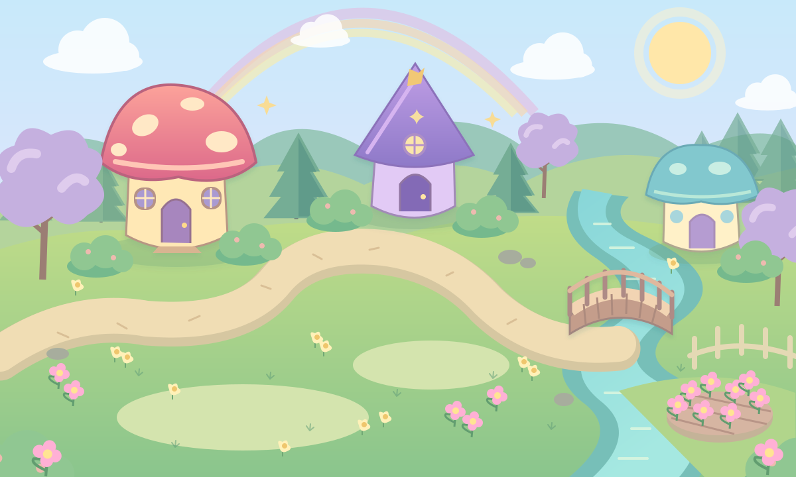

🌸 12цветочков✦ 1/ 20 чудиков
ДОБРО ПОЖАЛОВАТЬ ДОМОЙ
Долина чудиков✦
Здесь из щепотки магии рождается большая дружба.
В деревне всегда чудесно

1 житель
· Нажми на поляну, чтобы прогуляться☀ Время для волшебства